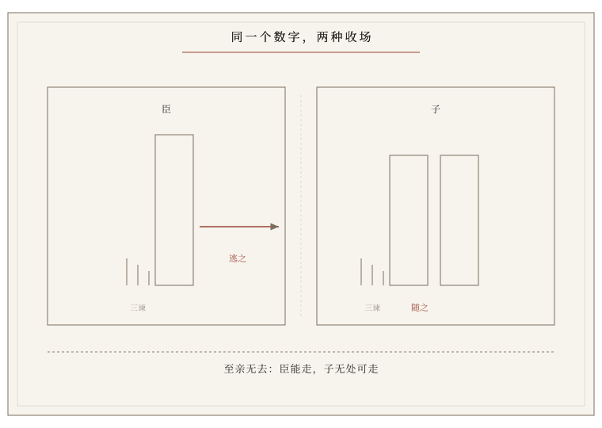

曲礼下 · 二·六十一 · 第 184 课
子之事亲，三谏不听，则号泣而随之，不去。注「至亲无去，志在感动之」。
说什么事：与臣同样的三谏，却有不同的结局。
落在哪一层：礼，兼及礼意。论「无可去之处」。
为何编在此位：紧接臣之逃。同一节奏，两种收场，正见礼之分。
【经】子之事親也，三諫而不聽，則號泣而隨之。
【注】至親無去，志在感動之。
【疏】父子天然，理不可逃，虽不从，则当号泣而随之，冀有悟而改之。然《论语》云「事父母，几谏」，此不云者，以其略耳。《檀弓》云「事亲无犯」，相互耳；又云「事君有犯」，故此论其微。《檀弓》言「事亲无犯」，此论其犯，亦互言耳。故注云「至亲无去，志在感动之」。
号泣 大声哭。非怨，非争，是泣。
随之 不离去，跟着他。
至亲无去 注语。臣可去，子不可去。
几谏 《论语》语，微谏。疏「以其略耳」，此经未言几，非不几。
无犯、有犯 《檀弓》「事亲无犯」，此经则三谏，疏谓「互言」。
儿子事奉双亲，三次进谏而不听，就号哭而跟着他，不离开。
上一节说臣三谏不听则去，这一节说子三谏不听则号泣而随之。同一个数字，同一种关系里的两种结局：臣可以去，子无处可去。「至亲无去」四字，是全节的根。
第一层 理不可逃 疏「父子天然，理不可逃」。君臣以义合，父子以天合。天合者，逃不掉。
第二层 号泣之用 注「志在感动之」。哭不是示弱，是一种最后的说服。礼把哭也编进了谏的程序。
第三层 互言之法 疏举《檀弓》「事亲无犯」「事君有犯」，与此经「三谏」相对，谓「互言耳」。礼书常一处分说，须两处合看。读礼者若执一处，必失其全。
第四层 几谏之略 《论语》云「事父母几谏」，此经只言三谏。疏谓「以其略耳」，非相违。此见注疏的读法：不轻断异文为矛盾，先求其可通。
与今日何干 与父母的分歧，最后的手段往往不是说服，是陪着。此一节把这种无奈的礼写定了。
| 左 | 右 |
|---|---|
| 三谏而不听 | 与臣同节 |
| 号泣而随之 | 不去，随之 |
| 至亲无去 | 父子天合，逃不掉 |
| 志在感动之 | 哭亦是一种谏 |
| 事亲无犯，事君有犯 | 互言，须两处合看 |
| 几谏 | 《论语》语，此经略之 |
画两格并排对照。左格：一人形向右走出，脚下有向外的箭头，箭头出格；其身后三道渐短的竖线（示三谏已尽）。右格：一人形紧随另一人形之后，两者相距极近，前者身后三道渐短的竖线同左，后者脚下无箭头。两格之间以细竖线分隔，不写字。赭色只用在左格那道向外的箭头。
